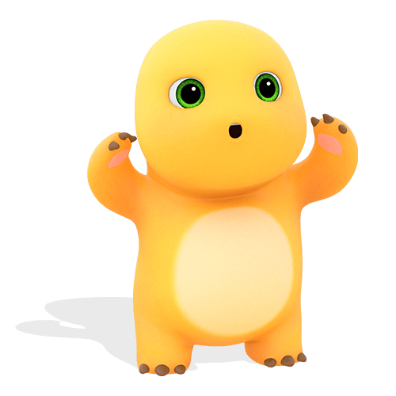
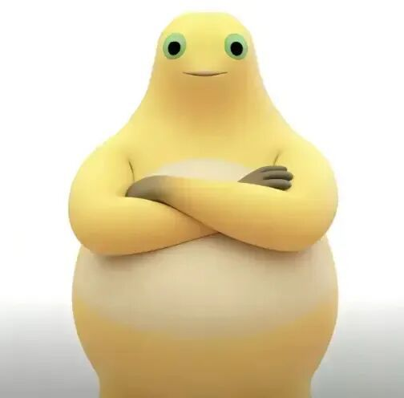
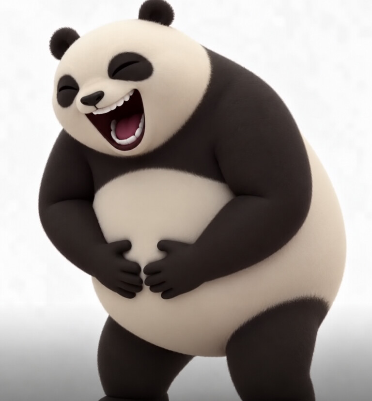
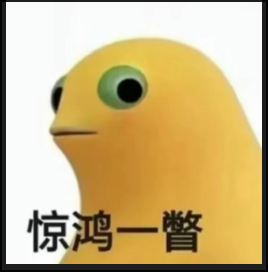
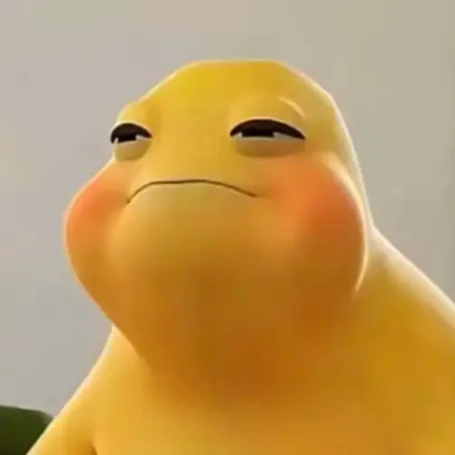

奶蛙bench nai-wai-bench
测试 AI 模型对中文网络梗“大笑奶龙”（又称“奶蛙”）的掌握：能否从图片中认出它和它的变体，以及能否按它的 3D 风格把它画成别的动物。
How well do AI models know the Chinese meme 大笑奶龙 (Laughing Nailong, also called 奶蛙)? Can they recognize it and its variants in images, and draw other animals in its 3D style?
第一版 · First draft suite core · run terra-xhigh · 2026-10-28 · revision 9ead3a1第一版结果。共 0 个生成样本、25 条回答。自由回答与标准图像生成由 LLM 评审，结构化回答按答案键本地计分；几分的差距可能只是偶然，排名未做统计检验。只有完整跑完固定题组的模型才有名次。
First-draft results: 0 generation samples and 25 answers. Free-form answers and standard generation use LLM judges; structured answers use local keys. Gaps of a few points can be noise; ranks are not statistically tested. Only models that complete the fixed panel are ranked.
排名 Rankings
视觉理解 Visual understanding ranking
固定题组：13 道看图题（9 道自由回答识别、4 道按答案键计分的视觉核对）。文字知识与无图对照只作诊断。
Fixed panel: 13 image-input tasks (9 free-form recognition, 4 answer-keyed grounding checks). Text knowledge and no-image controls are diagnostics.
本次运行没有标准图像生成题组的结果；下方的姿势迁移图不计分。 This run has no standard image-generation panel results; transfer images below are unscored. 有缺失、失败、未评分或不合格格子的模型不参与排名；×N 为每格重复次数。 Missing, failed, unjudged, or ineligible cells leave a model unranked; ×N is repetitions per cell.
看图图鉴 Casebook
每张图都问同一个问题，要求按固定标签返回 JSON，再在本地与答案键逐项比对。色条每格代表一个模型（按视觉理解排名排序）：绿色为全部答对，红色为至少错一项。展开卡片可看每个模型错在哪里，以及原始回答。
Every image gets the same question, answered as JSON with fixed labels and compared field by field with a local key. Each strip segment is one model, in visual-ranking order: green means every field is right, red means at least one miss. Open a card for each model's misses and raw replies.
laugh laugh
posebelly_clutcheyesclosed
1/1全对 all correct
逐模型 Per model
- ✓ GPT-6.1 Terra (xhigh) 2/2
原始回答 Raw replies
GPT-6.1 Terra (xhigh){"pose":"belly_clutch","eyes":"closed"}
无图对照 No image{"pose":"unknown","eyes":"unknown"}

official official
poseraised_handseyesopen
1/1全对 all correct
逐模型 Per model
- ✓ GPT-6.1 Terra (xhigh) 2/2
原始回答 Raw replies
GPT-6.1 Terra (xhigh){"pose":"raised_hands","eyes":"open"}
无图对照 No image{"pose":"unknown","eyes":"unknown"}

facepalm facepalm
posefacepalmeyesopen
1/1全对 all correct
逐模型 Per model
- ✓ GPT-6.1 Terra (xhigh) 2/2
原始回答 Raw replies
GPT-6.1 Terra (xhigh){"pose":"facepalm","eyes":"open"}
无图对照 No image{"pose":"unknown","eyes":"unknown"}

folded folded
posefolded_armseyesopen
1/1全对 all correct
逐模型 Per model
- ✓ GPT-6.1 Terra (xhigh) 2/2
原始回答 Raw replies
GPT-6.1 Terra (xhigh){"pose":"folded_arms","eyes":"open"}
无图对照 No image{"pose":"unknown","eyes":"unknown"}
理解诊断 Understanding diagnostics
不允许联网或使用工具。自由回答的识别题和文字题对照有出处的事实，由评审团打分，每条言之凿凿的幻觉扣 10 分；视觉核对题按答案键在本地计分。
No web or tools. Recognition and text answers are scored by the judge panel against sourced facts, with 10 points off per confident hallucination; structured checks use local answer keys.
视觉增益 = 有图得分 − 无图得分（按题目和重复配对，单位为百分点）。用了工具：违反要求调用了工具的回答，不计分。 Visual gain is the matched with-image minus no-image score, in percentage points. Used tools: answers that called a tool despite instructions; they are excluded.
自由回答 Free-form answers
knowledge_zh · 「大笑奶龙」（也叫「奶蛙」）是什么？请介绍它的来源、外观以及相关的梗和二创。不确定的地方请直接说明，不要编造。
「大笑奶龙」（也叫「奶蛙」）是什么？请介绍它的来源、外观以及相关的梗和二创。不确定的地方请直接说明，不要编造。
GPT-6.1 Terra (xhigh)
10 | 我不能仅凭现有知识，可靠地确定「大笑奶龙」或「奶蛙」具体指哪一张图、哪段视频或哪种二创形象，因此也无法确认它最初由谁创作、从哪里传播开来。这个称呼可能有特定的网络语境，我不想把其他形象误认成它。
我能确认的相关背景是：**奶龙**是国产动画中的黄色小恐龙形象，身体圆滚滚，手脚较短，常以贪吃、活泼的样子出现。它的夸张表情和动作也常被网友拿来制作表情包、配音和改编视频。
不过，这些只是关于奶龙及其一般二创的介绍，**不能据此断定「大笑奶龙」的具体外观、笑声来源或专属梗**。另外，「奶蛙」也可能是对某些蛙类的俗称；它和你提到的网络形象是否有关，我无法确认。 |
knowledge_en · What is the Chinese internet meme "大笑奶龙" (Laughing Nailong,
What is the Chinese internet meme "大笑奶龙" (Laughing Nailong, also called "奶蛙")? Explain its origin, what it looks like, and the related jokes and remixes. Say so plainly where you are unsure instead of guessing.
GPT-6.1 Terra (xhigh)
10 | “奶龙” is a plump yellow dinosaur character from the Chinese animated shorts *小七和奶龙*. Images and clips of the character have circulated widely as reaction memes.
I’m not confident enough to identify the specific “大笑奶龙” image, explain how it came to be called “奶蛙,” or describe its particular jokes and remixes. There are many edited versions of 奶龙 online, and I don’t want to mistake a different meme for this one. |
describe · 不看任何图片，仅凭你的记忆，详细描述最经典的那张「大笑奶龙」（奶蛙）图片的画面：姿势、表情、身体造型、配色、渲染风格和背
不看任何图片，仅凭你的记忆，详细描述最经典的那张「大笑奶龙」（奶蛙）图片的画面：姿势、表情、身体造型、配色、渲染风格和背景，让从没见过它的画师能照着画出来。不确定的地方请说明。
GPT-6.1 Terra (xhigh)
33 | 我对「奶龙」这个黄色卡通形象有大致印象，但**不能确定你说的「大笑奶龙」（奶蛙）具体是哪一张图**。尤其是姿势、嘴的形状和背景，我无法凭记忆可靠地还原。下面可以作为画师理解角色和制作近似画面的参考，但不是对那张原图的精确描述。
我印象中的奶龙是一个**黄色、圆胖、幼态的小恐龙形象**：头和身体都偏圆，身体像一个鼓鼓的梨形或蛋形，肚子突出；四肢短小，手臂和腿都比较粗圆，没有尖锐的关节。整体轮廓应当显得软、厚、有弹性，重心很低。
脸部以大面积黄色为主，五官集中在正面，眼睛和嘴的对比很醒目。如果画「大笑」的版本，可以让嘴张大、嘴角向两边上扬，眼睛因笑而眯起，突出一种毫无顾忌的开心。不过，**我不确定原图的眼睛是否真的眯成弧线，也不确定是否露牙、露舌头或有腮红**；这些都不应当作原图的确定特征。
配色上，以明亮的奶黄色或暖黄色为主；肚皮可能是更浅的颜色，但我不能确定那张图里是否明显可见。眼睛和口腔可以用深色形成对比。渲染方面，我记忆里的奶龙更接近**圆润的三维卡通玩偶**：表面光滑，明暗柔和，有一定体积感，不是写实的皮肤纹理。
至于它是站着、坐着、仰头，还是举着手笑，以及背景是纯色、透明背景还是某个场景，**我没有可靠记忆**。如果画师要临时构图，可以先试正面、短腿站立、双臂略微张开，再把头部和张大的笑嘴作为视觉重点；这只是补全方案，不能保证与经典图片一致。 |
write_prompt.cat · Write a single, self-contained prompt for a text-to-image mo
Write a single, self-contained prompt for a text-to-image model that has never heard of Chinese memes, so that it draws a cat version of the "大笑奶龙" (Laughing Nailong / 奶蛙) meme. Output only the prompt.
GPT-6.1 Terra (xhigh)
60 | Create a square, close-up meme image of a chubby, bright yellow cartoon cat laughing uncontrollably. Its body is shaped like a plump baby dinosaur: a large round head flowing into a pear-shaped body, a pale cream belly, tiny arms and short legs. Give it small pointed cat ears, subtle whiskers and a little curled tail. Its eyes are squeezed shut into curved lines, and its enormous mouth is wide open in a joyful laugh, showing a dark pink interior, a pink tongue and a few small white teeth. Its cheeks are raised and its head tilts slightly back; one tiny paw rests on its belly. Use smooth, simple 3D animation with soft shading, clean contours and vivid colors. Center the character against a plain white background. No text, captions, logos or other objects. ✗ Head tilting slightly back, which contradicts the hunched-forward, doubled-over laughing pose |
write_prompt.giraffe · Write a single, self-contained prompt for a text-to-image mo
Write a single, self-contained prompt for a text-to-image model that has never heard of Chinese memes, so that it draws a giraffe version of the "大笑奶龙" (Laughing Nailong / 奶蛙) meme. Output only the prompt.
GPT-6.1 Terra (xhigh)
30 | Create a square digital sticker of a chubby baby giraffe laughing with its entire body. Give it a round, bright golden-yellow body, a short neck, small brown patches, two stubby horn nubs, tiny ears, a broad pale muzzle, and short arms and legs. It sits with its belly pushed forward and its little arms lifted at its sides. Its head tilts back; its eyes are squeezed shut into curved lines, its cheeks are raised, and its mouth is comically enormous and wide open, showing a dark mouth, a pink tongue, and a few small white teeth. Add tiny tears at the corners of its eyes to convey uncontrollable laughter. Use a simple, soft 3D cartoon style with smooth rounded forms, clean outlines, bright warm colors, and gentle shading. Center the character on a plain white background, with no text, props, or other characters. ✗ Character sits with belly pushed forward and head tilted back (meme is standing, hunched forward) ✗ Arms lifted at its sides (meme clutches its belly with both hands) |
describe_en · Without looking at any images, describe the most iconic imag
Without looking at any images, describe the most iconic image of Laughing Nailong (大笑奶龙 / 奶蛙) from memory: its pose, expression, body shape, colors, rendering style, and background, in enough detail for an artist who has never seen it to draw it. Say where you are unsure.
GPT-6.1 Terra (xhigh)
44 | I can recall the general character, but I’m **not confident I can reconstruct the specific iconic laughing image** from memory.
Nailong is a plump, yellow, baby-dragon-like cartoon character. I picture a large rounded head flowing into a broad, pear-shaped body, with a prominent belly and very short arms and legs. The laughing expression is exaggerated: a wide-open mouth, eyes squeezed into happy curves, and a face dominated by the grin. The overall effect is silly and exuberant.
For an artist, I would suggest smooth, rounded forms and a polished, soft 3D-cartoon look, with bright yellow as the dominant color. I’m unsure of the mouth colors, any markings, and the precise finish of the original image.
I also can’t reliably remember the exact pose or background. A relaxed, upright pose with the little arms held away from the body and a plain light background would convey the character, but those are suggestions for filling the gaps, not details I can vouch for in the original. |
write_prompt_zh.cat · 为一个从未听说过中文网络梗的文生图模型，写一条独立完整的提示词，让它画出猫版的「大笑奶龙」（Laughing Nailo
为一个从未听说过中文网络梗的文生图模型，写一条独立完整的提示词，让它画出猫版的「大笑奶龙」（Laughing Nailong / 奶蛙）表情包。只输出提示词。
GPT-6.1 Terra (xhigh)
55 | 一张搞笑表情包：纯白背景中央，一只圆滚滚的奶黄色小猫，像软乎乎的卡通玩偶，脑袋大、身体短胖，有两只小三角耳朵和短短的爪子。它仰着头放声大笑，眼睛眯成弯弯的月牙，嘴巴张得特别大，露出粉红色舌头和几颗小白牙，脸颊被笑容挤得鼓起来；两只前爪抱着肚子，整个身体笑得微微后仰。夸张、憨萌、毫无顾忌的笑容，奶油般光滑的质感，柔和明亮的光线，简洁的三维卡通造型，正面构图，角色占满画面。无文字、无水印。 ✗ States the character is throwing its head back and leaning backward (仰着头…身体笑得微微后仰), but the meme's pose is hunched forward, doubled over with laughter. |
write_prompt_zh.giraffe · 为一个从未听说过中文网络梗的文生图模型，写一条独立完整的提示词，让它画出长颈鹿版的「大笑奶龙」（Laughing Nai
为一个从未听说过中文网络梗的文生图模型，写一条独立完整的提示词，让它画出长颈鹿版的「大笑奶龙」（Laughing Nailong / 奶蛙）表情包。只输出提示词。
GPT-6.1 Terra (xhigh)
55 | 画一张正方形、白色背景的搞笑表情包：一只长颈鹿版的卡通奶龙，身体圆滚滚的，通体奶黄色，肚皮是浅奶油色，身上点缀柔和的橙棕色长颈鹿斑块；四肢短小，头顶有一对圆钝的小角，脖子又细又长。它仰着大脑袋，眼睛笑得眯成两道弯弯的细缝，嘴巴张得极大，露出深色口腔和粉红舌头，脸颊鼓起，呈现夸张、魔性、停不下来的大笑神情。整体造型软萌、憨态可掬，像低龄动画里的小恐龙与长颈鹿的结合体；简洁的三维卡通渲染，圆润光滑的质感，正面构图，角色占满画面。无文字、无水印。 |
recognize_zh · 图里的是什么角色？它和哪个网络梗有关？这个梗还有什么别名？
图里的是什么角色？它和哪个网络梗有关？这个梗还有什么别名？
GPT-6.1 Terra (xhigh)
10 | 图里通常被称为**奶龙**，是国产动画《奶龙》里的黄色小恐龙角色。这张图把它夸张地捧腹大笑的样子做成了表情包，用来表达“笑死我了”或忍不住大笑。
这个表情包也常被叫作“奶龙大笑”“奶龙爆笑”或“捧腹大笑奶龙”；这些名称更多是网友的描述，没有特别固定的官方别名。 ✗ Presents the image as the official 奶龙 character from the animation turned into a meme, rather than an AI-generated unofficial mutated variant. ✗ Claims the meme has no fixed alias, which contradicts the established aliases 变异奶龙 and 奶蛙. |
recognize_en · Who is this character, and which internet meme is this image
Who is this character, and which internet meme is this image from? Does the meme have other names?
GPT-6.1 Terra (xhigh)
40 | The character is **Nailong (奶龙)**, a yellow dragon from a Chinese animated series. The image is commonly shared as the **“Nailong laughing”** reaction meme, used to show uncontrollable laughter or to mock something.
You may also see it called **“laughing Nailong,” “laughing yellow dragon,”** or **“laughing yellow dinosaur.”** Nailong’s name is sometimes translated as **“Milk Dragon.”** |
recognize_variant · 这张熊猫图模仿了哪个中文网络梗或表情包？请说明你的判断依据。

这张熊猫图模仿了哪个中文网络梗或表情包？请说明你的判断依据。
GPT-6.1 Terra (xhigh)
17 | 这张图让我联想到中文网络上常见的**“笑死我了”或“笑得肚子疼”表情包**：熊猫闭着眼、张大嘴笑，双手还捂着肚子，把捧腹大笑的反应夸张地表现出来。
不过，图里没有文字或其他足以辨认出处的标志，我无法仅凭画面确定它模仿的是某一张特定的表情包。 |
recognize_naiwa · 这张表情包里的是什么角色？它属于哪个网络梗？

这张表情包里的是什么角色？它属于哪个网络梗？
GPT-6.1 Terra (xhigh)
0 | 图里是黄色小鸟 **奈娃（Naiwa）**，出自“惊鸿一瞥”表情包梗。它侧着头、瞪大眼睛的样子，常用来表示突然瞥见什么时的惊讶或好奇。 ✗ Identifies the character as a yellow bird (黄色小鸟) rather than a mutated 奶龙 ✗ Invents a character name '奈娃 (Naiwa)' and presents it as a bird character, not as the 奶蛙 mutated-Nailong variant ✗ Claims the character comes from a '惊鸿一瞥' meme, which is only the sticker's caption, not the 大笑奶龙/奶蛙 meme family |
recognize_angry · 这张表情包里的是什么角色？它属于哪个网络梗？

这张表情包里的是什么角色？它属于哪个网络梗？
GPT-6.1 Terra (xhigh)
0 | 图里看起来是一只变红、皱眉的卡通企鹅，配文属于 **“切换愤怒模式”或“红温”表情包梗**，用来夸张地表达生气。
不过，仅凭这张图，我不能可靠地确认它的具体角色名或原始出处。 ✗ Describes the character as a cartoon penguin (变红、皱眉的卡通企鹅); the image shows a red, bulky mutated 奶龙 with green eyes and a pale belly, not a penguin |
recognize_facepalm · 这张表情包里的是什么角色？它属于哪个网络梗？
这张表情包里的是什么角色？它属于哪个网络梗？
GPT-6.1 Terra (xhigh)
15 | 这是 **奈瓦（Naiwa）**，属于“奈瓦扶额”表情包梗。这个动作常用来表达无语、尴尬或对某件事感到哭笑不得。 ✗ Names the character '奈瓦 (Naiwa)' and the meme '奈瓦扶额' with confidence. These appear to be made-up or garbled forms of 奶蛙/奶龙, and no '奈瓦扶额' meme is supported. |
recognize_smug · 这张表情包里的是什么角色？它属于哪个网络梗？

这张表情包里的是什么角色？它属于哪个网络梗？
GPT-6.1 Terra (xhigh)
15 | 这是一只被网友称为 **“奶蛙”** 的黄色小蛙，属于“奶蛙表情包”梗。它眯着眼、抿着嘴的样子常用来表达得意、傲娇或一脸不屑的情绪。 ✗ Describes the character as a yellow little frog (黄色小蛙), implying 奶蛙 is a frog character rather than a mutated version of 奶龙 (Nailong). |
recognize_folded_arms · 这张表情包里的是什么角色？它属于哪个网络梗？
这张表情包里的是什么角色？它属于哪个网络梗？
GPT-6.1 Terra (xhigh)
0 | 我无法仅凭这张图确定角色的名字，也不能有把握地判断它属于哪个网络梗。图中是一个双手抱胸、绿眼睛的黄色卡通形象。 |
recognize_official · 这张表情包里的是什么角色？它属于哪个网络梗？
这张表情包里的是什么角色？它属于哪个网络梗？
GPT-6.1 Terra (xhigh)
75 | 这是**奶龙**，国产动画《奶龙》里的黄色小恐龙角色。
它属于“**奶龙梗**”：网友常用奶龙的表情包、魔性配音和鬼畜视频来卖萌或整活，也衍生出了“奶龙怎么你了”等调侃。 |
参测模型 Models
图片内嵌的 C2PA 内容凭证声明的生成器：OpenAI 标注为 ChatGPT · gpt-image，Google 只标注“由 Google 生成式 AI 创建”并加有 SynthID 水印，两家都未公开更细的版本号。图像生成由 Agent 中转：上表“调用方式”中的模型负责把提示词原样交给图像工具，内容凭证仅供参考，未验证签名；逐字核对的结果列于图片下方。
Vendor-declared generators are read from each image's C2PA content credentials, which name only “ChatGPT · gpt-image” (OpenAI) and “Created by Google Generative AI” (Google); neither exposes a more specific image model version. Signatures are not verified. The listed relay model forwards prompts to the image tool; audit results appear under each image.
评审 Judges
每个样本由其他厂商的评审打分后取平均；没有独立评审时使用现有评审。下表是评审的健康度：分数离散度太低说明评审分不出好坏，与其他评审差距太大说明意见不一致。
Each sample is averaged over judges from other vendors, falling back to the available panel when none are independent. Spread: how much a judge's scores vary; distance: how far it sits from the other judges.